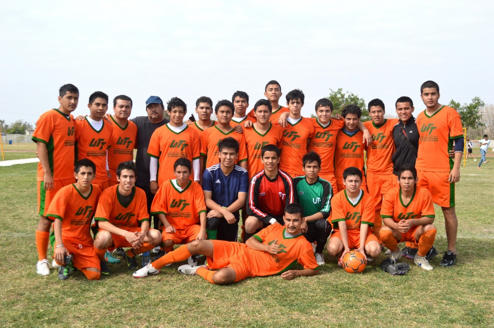

Categorías
Estas son las categorías disponibles para inscripción
- Generación (2007 - 2008)
- Generación (2005 - 2006)
- Generación (2003 - 2004)
- Generación (2001 - 2002)
- Generación (1999 - 2000)
- Generación (1997 - 1998)
- Libre
Estas son las categorías disponibles para inscripción